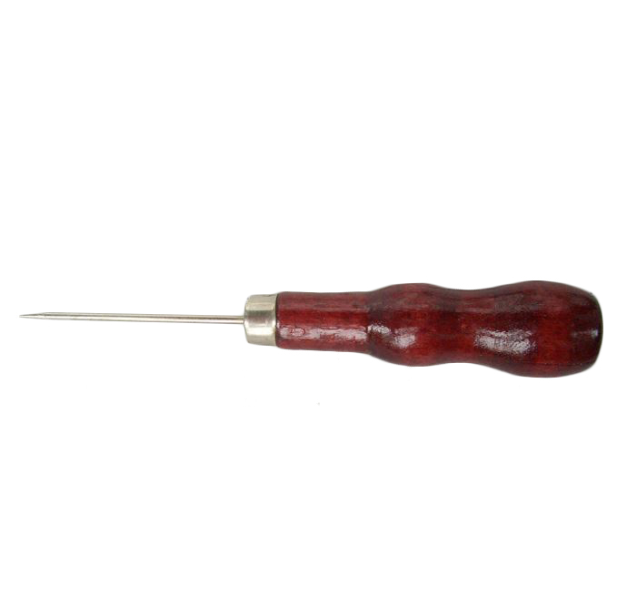
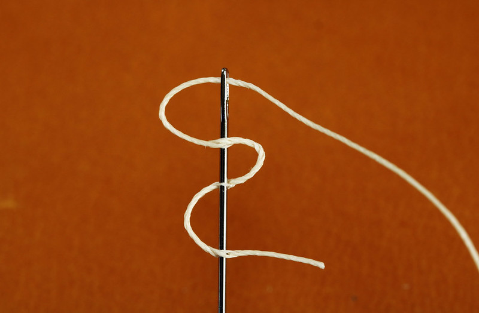

Compras
Entre las tradiciones artesanales colombianas están el tejido con fibras naturales, la cerámica, la orfebrería, el trabajo de la madera y también la marroquinería.
César Giraldo - Taller Manual del Cuero
César GiraldoEl Taller Manual del Cuero surge como una actitud de vida. Encontré en los oficios manuales una mayor sintonía y armonía con el universo.
En el Taller Manual del Cuero podrás comprar piezas artesanales de cuero que te durarán toda la vida: desde pequeños accesorios que usarás a diario hasta muebles y objetos de decoración. Si quieres también puedes tomar clases y enamorarte del oficio.
Datos clave para tu visita:
- Ubicado en Carrera 5#26c-18, en el bohemio barrio La Macarena de Bogotá
- Abierto de lunes a viernes
- También tienen tienda en línea
Te muestro algunas definiciones para entender mejor tu visita.
- Lezna
-
Herramienta para perforar el cuero. Suele ser puntiaguda, de metal, con un mango de madera.
 - Mordaza para costura
-
Utensilio de madera que sostiene la pieza de cuero en el proceso de costura manual.
 - Desbastar
-
Adelgazar el cuero con un instrumento especial para ello o una máquina desbastadora.